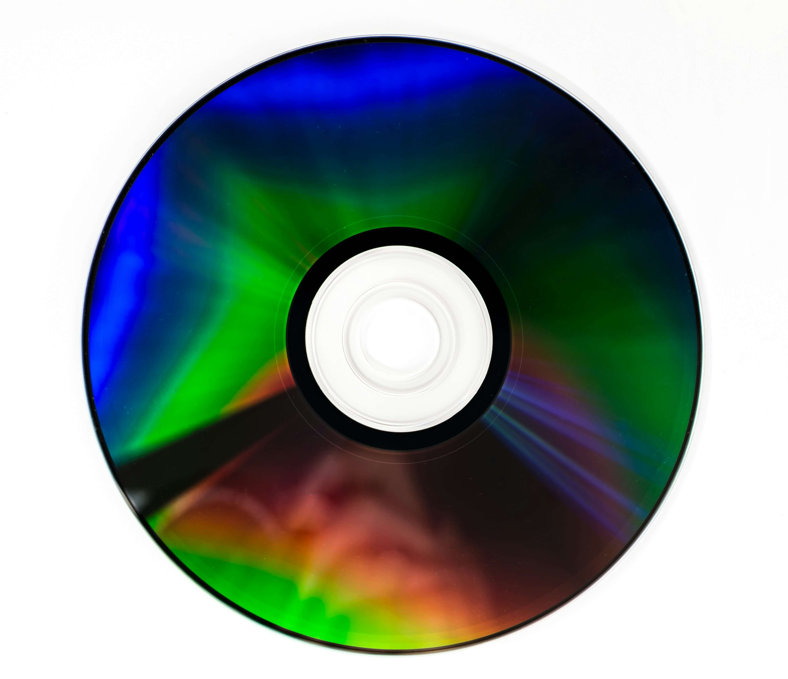

Folk music represents traditions, they capture the feelings of people who wrote them and are an opportunity for people to express their feelings, stories, and ideas. While addressing social and political issues, it is a medium for self-expression. Typically accompanied by traditional acoustic instruments, it encompasses varieties of styles including but not limited to ethnic music, gospel hymns and dance tunes. Historically it is tied to rural communities, but it has emerged on urban contexts. Folk music helps preserve cultural identity by keeping customs and storytelling alive, allowing future generations to learn about their heritage through music. It celebrated local traditions and connected people with their roots.

Many religions and spiritual traditions use music as part of worship, reflection, and celebration of their beliefs. While often being the inspiration for the creation of music, it is also frequently delivered in the atmosphere for a spiritual occasion. Music can move, and lose themselves in music, many people describing their feelings towards it as a “pull towards god” or the voice of God. Many religions such as Catholicism, Hinduism and Buddhism use ancient instruments and rituals to perform spirituality. Bronze instruments from Indonesia are mainly used in Hindu meditative music, while Christian music incorporates rock band music and Russian Orthodox choir. It is an easier way to worship and express gratitude towards their beliefs.
Throughout history, music has been used to inspire change within communities and unite people during times of social and political movements. Protest songs, freedom songs and performances allow people to express their voices, raise awareness and call for action, fighting against injustice and social norms. Music becomes a way of knowledge and action, establishing shared common meanings and interests. Strengthening hope during difficult times, solidarity within social groups. Music does not only serve as a form of artistic expressing but as a powerful tool for communication and social change.
Before physical concerts take place, music begins with a deep curiosity inside of a home. Bedrooms, living rooms and home studios are places where people are able to create new music from people around them through speakers or simply enjoy artists inside of headphones. Many music artists are modern in a way that it is not required to record music with big budgets, but instead prefer a more personal approach by producing quality music at home. Musical spaces can appear in many ways that allow creativity in different kinds of places, whether it is small or large expensive productions.
Music is generally part of a person's everyday life, heard in coffee shops, shopping centers, airports and even restaurants, it gives the places that people inhabit a new perspective and unique mood. Public spaces allow individuals to be exposed to different cultures, new sounds and even a place to share the same feelings with an audience. Whether it is street musicians performing in sidewalks, hearing a popular song through the park or background music in an elevator, these everyday environments show how music becomes part of the places of everyday and how it moves with people.